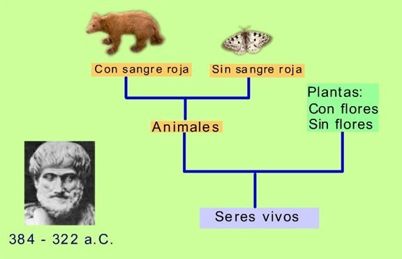
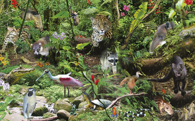
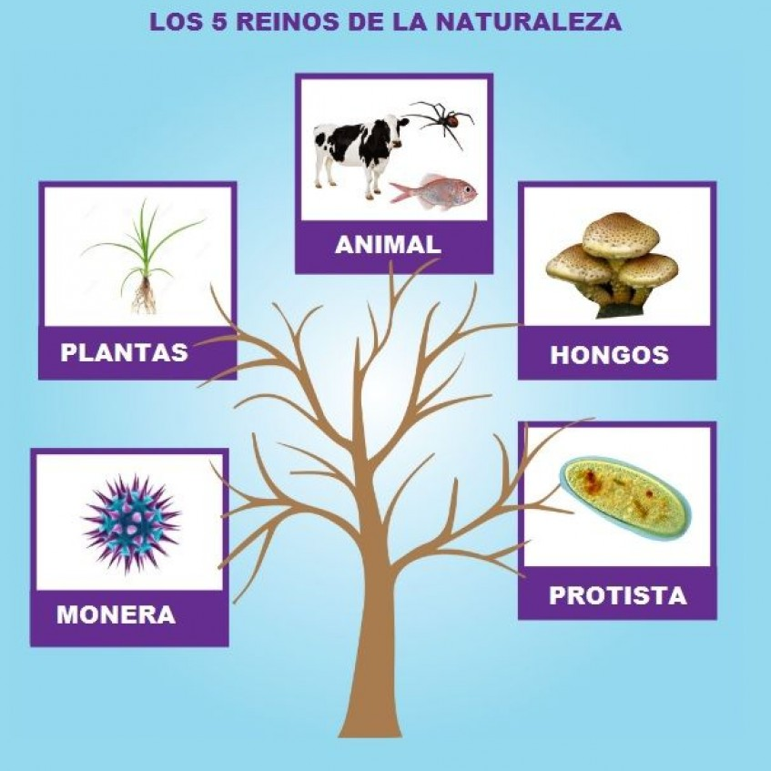
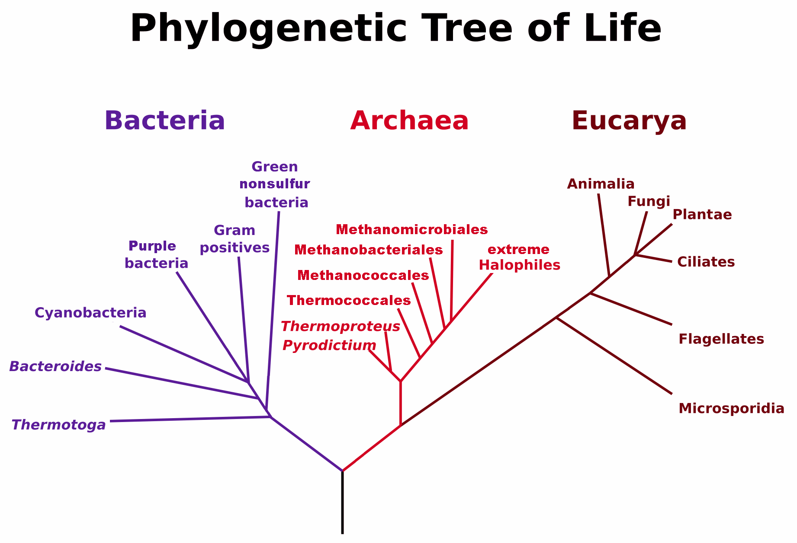
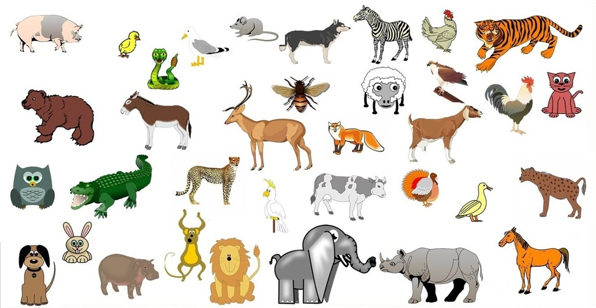
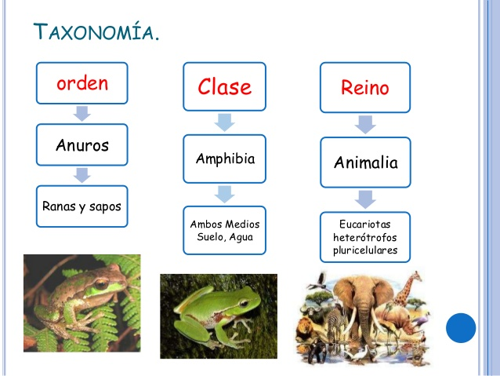
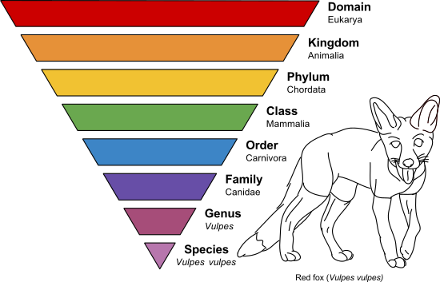
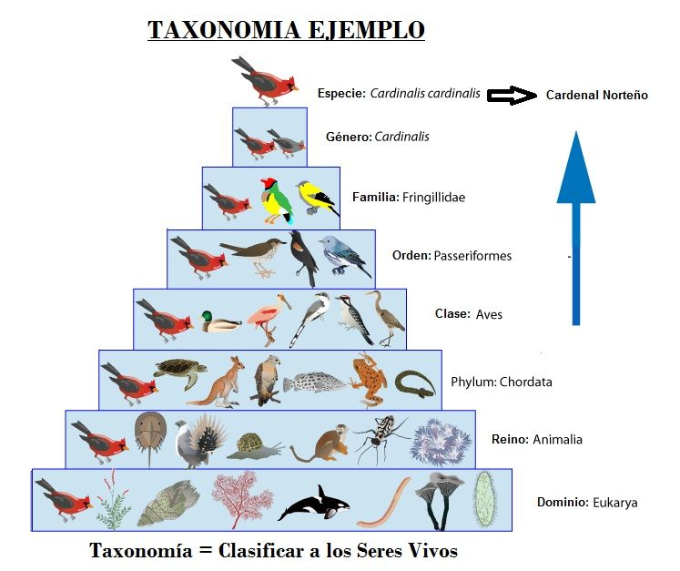
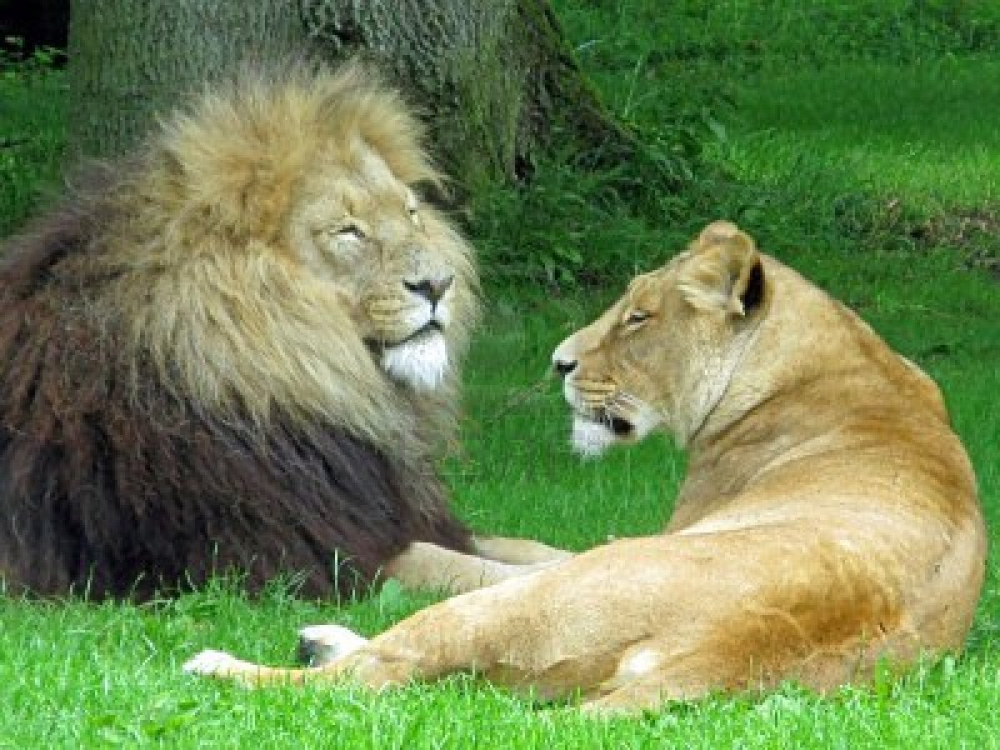

INFORMACION SOBRE EL TEMA
Bienvenido a la sección de información, aquí podrás hacer una retro alimentación del tema propuesto en el juego y además si deseas profundizar mas el tema, puedes aprender con la siguiente información:
¿QUE ES LA TAXONOMIA?

La taxonomía es la ciencia que nombra, describe y clasifica los organismos en un sistema jerárquico, se basa en la constitución de un sistema jerárquico de grupos dentro de otros de categoría superior.
Tipos de Sistemas de Clasificación
Sistema Aristotélico de 2 Reinos: Los seres vivos se clasificaban en 2 grandes reinos las plantas y los animales, dentro de las plantas encontrábamos las algas, hongos y organismos procariontes, y en los animales los protozoos.
 Sistema de 3 Reinos surgido de la diferenciación entre procariotas y eucariotas: Vemos como se divide en 3 grupos, las plantas, los animales y los moneras, dentro de las plantas encontramos las algas y los hongos, en los animales los protozoos y en el monera los procariotas.
 Sistema de 5 Reinos: Este es el sistema actual donde se divide en 5 reinos, en las plantas, hongos, animales, protistas, donde se encuentran las algas y los protozoos y en el monera los procariotas.

Categorías de la Taxonomía o Taxas
Dominios: Son el nivel mas alto de los taxas y busca clasificar a los seres vivos a partir de sus características celulares, son Eukarya: organismos eucariotas, Bacteria: Organismos procariotas y Archea: Bacterias muy antiguas
 Reinos: Los reinos son el siguiente taxa, y buscan clasificar a los seres vivos a partir de sus características, entre ellos encontramos el reino plantae, donde están todas las plantas, el reino animal, donde están todos los animales, el reino fungí, donde se encuentran los hongos, el reino protista donde están las algas y los protozoos y el reino monera donde están los organismos procariotas.
 - copia.jpg)
Filo: Es el siguiente taxa y busca agrupar las especies en base de que si tienen columna vertebral o no, existe el filo cordata o cordado que significa que posee columna vertebral y el no cordado que significa que no tiene columna vertebral.
 Clase: Es el siguiente taxa y busca agrupar a los seres vivos por las características mas comunes que hay entre ellos.
 Orden: Es el siguiente taxa y busca agrupar a los seres vivos por las características comunes dentro de su clase, ejemplo el orden Primates, contiene a todos los seres vivos con 5 dedos, un patrón dental común y una primitiva adaptación corporal.
 Familia: Es el siguiente taxa y busca agrupar a los seres vivos por las características mas comunes dentro de un orden, por ejemplo el orden Primates incluye la familia Hominidae, que comprende los primates bípedos.
 Genero: Es el siguiente taxa y busca agrupar a los seres vivos por las especies relacionadas entre si por medio de la evolución, por ejemplo de la Familia Hominidae, el genero Homo comprende a Homo Sapiens y a sus antecesores próximos.
 Especie: Es el ultimo taxa se refiere a un grupo de individuos que cuentan con las mismas características permitiendo la descendencia fértil entre ellos.
WebGrafia
Información Basada en: Wikipedia Categorías Taxonómicas